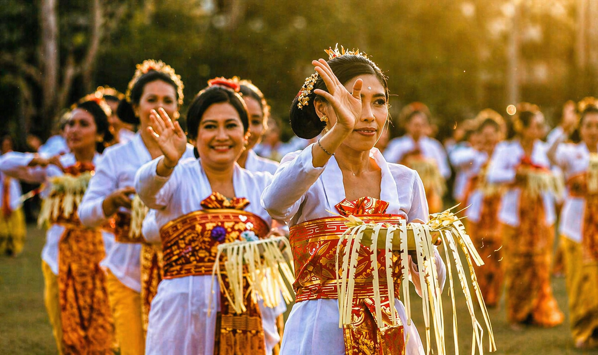
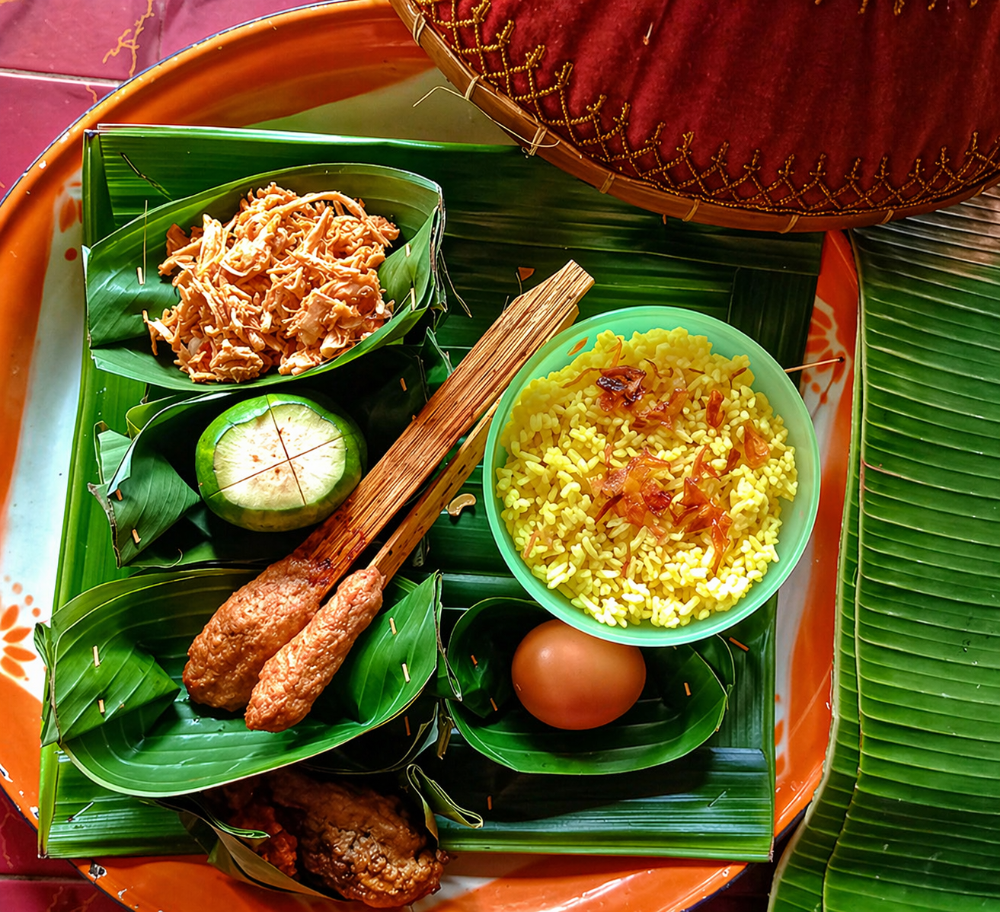
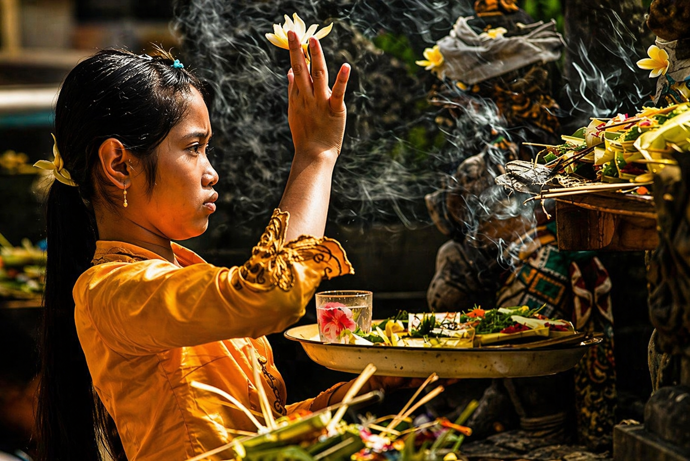

THE DAY OF BLESSINGS
A sacred day celebrated ten days after Galungan, when gratitude, blessings, and prayers honor ancestral spirits before they return.
Kuningan marks the final sacred day of the Galungan celebration cycle. It is a time of gratitude, prayer, and spiritual completion.
Balinese families believe ancestral spirits who came during Galungan receive blessings and are respectfully honored before returning.
Kuningan is strongly associated with yellow offerings and yellow rice, symbols of prosperity, holiness, and divine blessing.
Compared to the festive energy of Galungan, Kuningan feels calmer, more reflective, and deeply graceful.
The day before Kuningan. Families prepare offerings, ceremonial items, yellow rice, and complete everything needed for the holy day.
The main sacred day. Families pray at home shrines and temples, express gratitude, and seek blessings for the future.
The joyful day after Kuningan. Many families gather, relax, visit relatives, and continue the warm festive mood.
These days complete the spiritual cycle through preparation, worship, gratitude, and togetherness.
Kuningan is celebrated ten days after Galungan and repeats every 210 days, approximately every 6 months.
Because it follows the Balinese Pawukon calendar, the month changes throughout the year.
Find the next Galungan date, then count forward ten days to reach Kuningan.
Temples, family compounds, Ubud, Gianyar, Denpasar, and villages across Bali.
Many prayers happen in the morning, creating the best cultural atmosphere.
Wear modest clothing when visiting temples or ceremonies.
Keep respectful distance during family worship and sacred rituals.
Look closely at the yellow-themed offerings and beautiful decorations.


